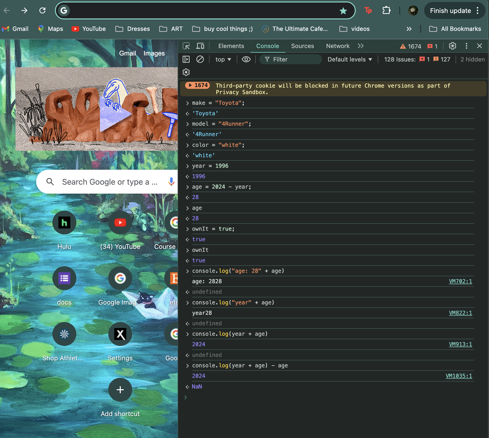
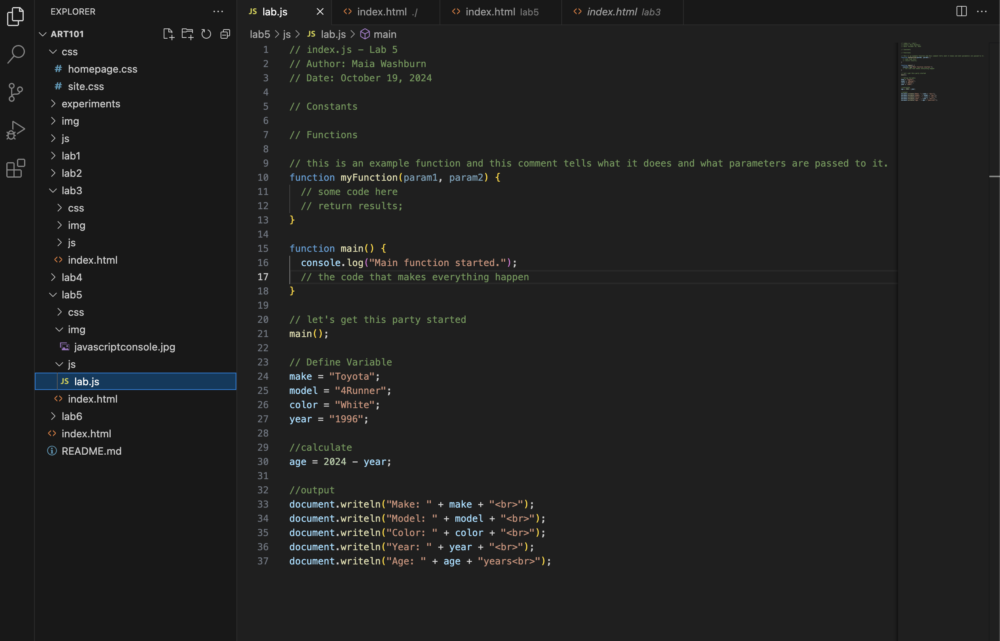
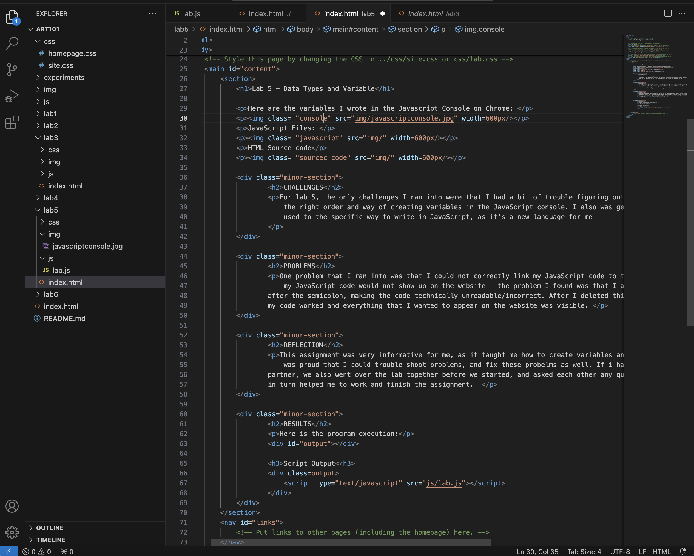
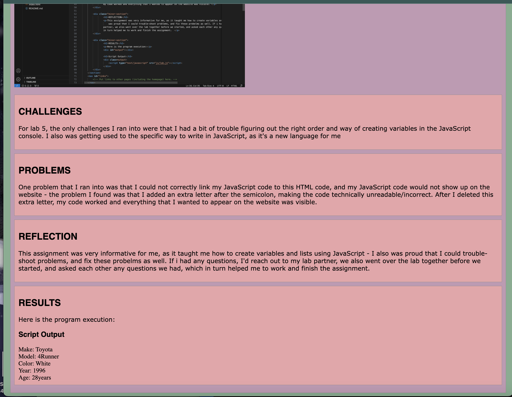

Lab 5 - Data Types and Variable
Here are the variables I wrote in the Javascript Console on Chrome:

JavaScript Files:

HTML Source Code:

Webpage:

CHALLENGES
For lab 5, the only challenges I ran into were that I had a bit of trouble figuring out the right order and way of creating variables in the JavaScript console. I also was getting used to the specific way to write in JavaScript, as it's a new language for me
PROBLEMS
One problem that I ran into was that I could not correctly link my JavaScript code to this HTML code, and my JavaScript code would not show up on the website - the problem I found was that I added an extra letter after the semicolon, making the code technically unreadable/incorrect. After I deleted this extra letter, my code worked and everything that I wanted to appear on the website was visible.
REFLECTION
This assignment was very informative for me, as it taught me how to create variables and lists using JavaScript - I also was proud that I could trouble-shoot problems, and fix these probelms as well. If i had any questions, I'd reach out to my lab partner, we also went over the lab together before we started, and asked each other any questions we had, which in turn helped me to work and finish the assignment.
RESULTS
Here is the program execution: